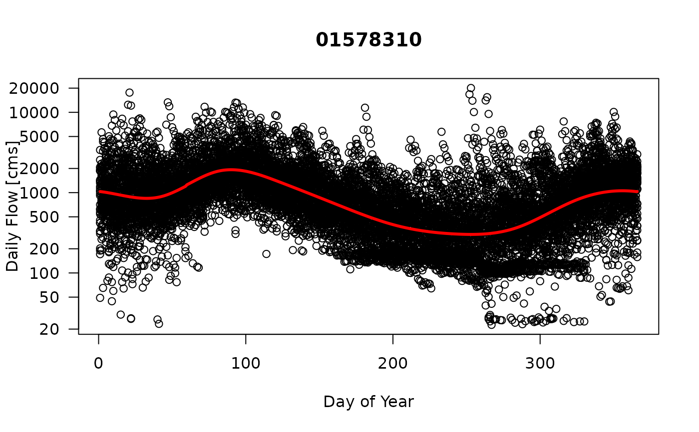

Create Daily Seasonally-adjusted Log Flow Residuals. The procedure to compute daily seasonally-adjusted log flow residuals is the following: 1) Check to make sure that the raw flow data are in the data set and that seasonally adjusted values have not already been computed. If so, no additional computations are performed. If not, then proceed with remaining steps. 2) Add date features if not already in the data set. 3) Compute and store Log (ln) flow as 'LogQ...' 4) Compute GAM model and store seasonally adjusted LogQ flow residuals as 'sa0LogQ...' 5) Smooth seasonally adjusted Log flow residuals by an averaged values based on dvAvgWin, dvAvgWgt, and dvAvgSides and store as "saxLogQ..."
data frame with daily flow data. The flow and data qualifier code for each site is organized into two columns (e.g., "q01594440", "q01594440cd" for USGS gage 01594440)
a single USGS gage ID
Averaging window (days) for smoothing the residuals of the seasonally adjusted daily flow values.
Averaging method ("uniform", "weighted" [default], or "centered") for creating weights. If using "weighted" then use dvAvgSides=1. If using "centered" then use dvAvgSides=2.
If dvAvgSides=1 only past values are used, if dvAvgSides=2 then values are centered around lag 0.
plot residuals for selected averaging windows.
return data frame of flow data with additional seasonally adjusted values
#Set Retrieval Parameters
yearStart <- 1983
yearEnd <- 2015
siteNumbers <- c("01578310")
# Regular Retrieval (default usage)
df <- getUSGSflow(siteNumbers, yearStart, yearEnd, fill=TRUE)
# Apply default smoothing
df <- seasAdjflow(df,"01578310")

#>
#>
#>
#>
#> *Figure 0. Daily Flow [cms] as a Function of Day of Year. (Solid red line is the predicted GAM model using the model: gam(LogQ ~ s(doy,bs='cc')).)*
#>
#>
#>